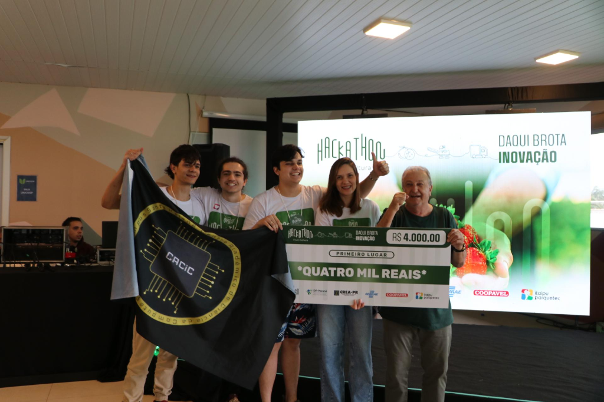

Plataforma de rastreabilidade, gestão documental e certificações agrícolas que conecta produtores ao mercado internacional.
Seu passaporte para o mercado internacional.
Problemas que impedem o crescimento e a competitividade internacional
Documentos desorganizados, perdidos ou vencidos causam atrasos e prejuízos na exportação.
Impossibilidade de rastrear a origem e o caminho dos produtos da colheita ao consumidor final.
Falta de informação sobre requisitos e certificações exigidas pelos países de destino.
Ausência de documentação comprobatória de boas práticas e conformidade com normas internacionais.
Tecnologia que transforma a gestão agrícola e abre portas para o mundo
Todos os documentos e certificações em um único lugar, organizados e acessíveis.
Notificações automáticas para renovação de certificados e documentos antes do prazo.
Lotes consultáveis por toda a cadeia produtiva com informações completas e verificáveis.
Acompanhamento total do produto da colheita ao consumidor final com transparência.
Segurança e privacidade dos dados em conformidade com a legislação brasileira.
Registro de boas práticas produtivas para emissão de certificações e selos reconhecidos.
Do produtor ao mercado internacional em 6 etapas
Cadastro do produtor e propriedade rural
Criação do lote de produção
Registro de todas as etapas produtivas
Upload e gestão de documentos
Emissão de certificados e selos
Exportação com documentação completa
Resultados mensuráveis que transformam o agronegócio
Soluções personalizadas para cada elo da cadeia produtiva
Gestão centralizada de todos os produtores associados, com controle total de documentação e rastreabilidade para facilitar exportações em larga escala.
Ferramentas simples para organizar documentos, certificações e registros de produção, aumentando o valor e a competitividade dos produtos.
Acesso rápido a toda documentação necessária, reduzindo riscos de recusa de cargas e agilizando processos de exportação.
Inovação e experiência a serviço do agronegócio
Inovação reconhecida pelo mercado
Projeto validado e reconhecido no principal evento de inovação do setor frutícola brasileiro.
Testes com cooperativas reais
Validação com produtores
Aprovação de especialistas do setor
Junte-se às cooperativas e produtores que já estão conquistando o mercado internacional com a Trace Farm.